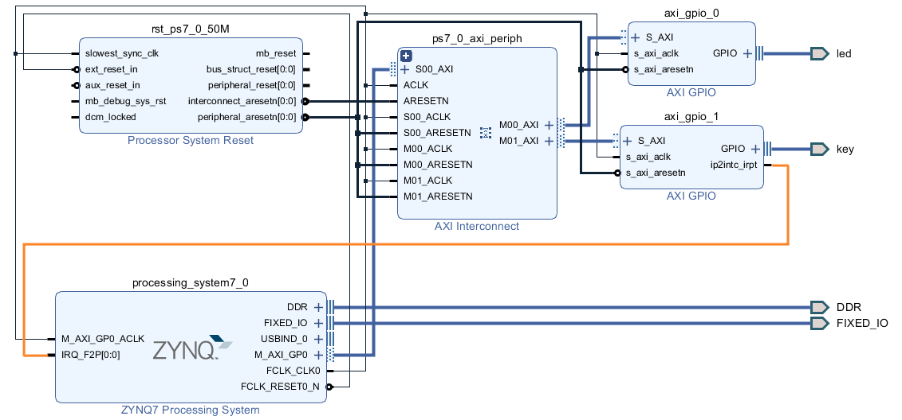
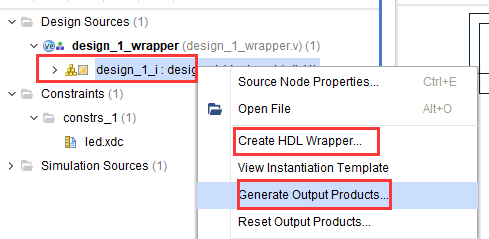
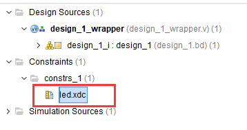
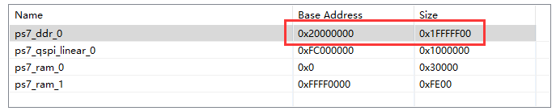

通过BRAM实现PS与PL数据交互#
有时CPU需要与PL进行小批量的数据交换，可以通过BRAM模块，也就是Block RAM实现此要求。本章通过Zynq的GP Master接口读写PL端的BRAM，实现与PL的交互。在本实验中加入了自定义的FPGA程序，并利用AXI4总线进行配置，通知其何时读写BRAM。
以下为本实验原理图，CPU通过AXI BRAM Controller读取BRAM数据，CPU仅配置自定义的PL BRAM Controller的寄存器，不通过它读写数据。

硬件环境搭建#
以“ps_hello”为基础，另存为一份工程，并配置打开ZYNQ的中断
首先添加AXI BRAM Controller模块，用于PS端控制BRAM，双击打开配置，连接AXI总线，可用于读写BRAM模块，AXI模式设置为AXI4，数据宽度设置为32位，memory depth不在这里设置，需要在Address Editor里设置。BRAM端口数量设置为1个，用于连接双口RAM的PORTA。不使能ECC功能。
{kind=link}
由于AXI4总线为字节询址，BRAM数据宽度设置也是32位，同样都是32位数据宽度，因此在映射到BRAM地址时，需要按4字节询址，即去掉最后两位，下图为BRAM控制器与BRAM的映射关系。
{kind=link}
添加BRAM模块，BRAM设置如下，有两种模式选择，standalon模式，此模式可以自由配置RAM的数据宽度和深度。BRAM Controller模式，此模式下地址线和数据端口默认为32位，本实验因为用到了BRAM控制器，因此选择BRAM Controller模式。Memory类型选择双口RAM，一端连BRAM控制器，一端连PL RAM控制器。
{kind=link}
添加自定义的PL RAM控制器pl_ram_ctrl，功能很简单，start信号有效后开始读取BRAM的数据，可通过ILA逻辑分析仪观察读取的数据，PL RAM控制器读BRAM结束后，开始向BRAM写数据，写完数据使能intr信号，即中断信号，CPU即可读取BRAM的数据。将PL控制器信号与BRAM的PORTB连接。自定义IP在ip_repo文件夹中。

如果想添加自定义IP到IP库中，点击IP Catalog，在Vivado Repository右键点击Add Repository

找到自定义IP所在文件夹，点击Select
{kind=link}
跳出窗口，选择IP，点击OK
{kind=link}
即可看到，出现了刚添加的IP

连接AXI BRAM Controller的BRAM_PORTA到BRAM的PORTA，连接pl_bram_ctrl的BRAM_PORT到BRAM的PORTB。连接pl_bram_ctrl模块的中断信号intr到ZYNQ的中断口。并点击自动连接

在Address Editor里选择BRAM询址大小，如设置4K空间，即可询址BRAM空间为1K深度。
{kind=link}
Block Design添加逻辑分析仪方法#
再介绍一种添加逻辑分析仪的方法，选中BRAM_PORT总线和intr中断，右键选择Debug
{kind=link}
可以看到总线上多了小昆虫，点击Run Connection Automation，自动连接
{kind=link}
自动添加了一个ILA模块，并且有一个总线接口，一个信号接口

保存设计，之后点击Generate Bitsream生成bit文件，并导出Hardware信息。

Vitis程序开发#
程序设计流程为：输入起始地址和长度CPU通过BRAM控制器写入BRAM数据通知PL控制器读取BRAM数据PL内部读完后向相同位置写入数据，初始数据由CPU告知写完后使能write_end信号，触发GPIO中断中断读取BRAM数据，打印显示
进入Vitis后，在Vitis下新建项目，已经准备好程序。程序也比较简单，首先中断设置
While语句中需要输入起始地址和长度，之后调用bram_write函数
{kind=link}
{kind=link}
4. 在bram_read_write();函数里先通过BRAM控制器写入数据，数据初值为TEST_START_VAL，之后配置PL RAM控制器参数，有长度，起始地址，初始数据，以及开始信号。并在函数中判断测试长度是否超出BRAM控制器地址范围，如果超出，会报错，需要重新输入地址和长度。

中断服务程序中，BRAM控制器读取BRAM的数据，并打印
{kind=link}
实验现象#
打开Putty
{kind=link}
通过Run Configurations下载程序，注意勾选Program FPGA，点击Run

打开Hardware Manager，设置将中断信号作为触发信号，选择上升沿触发，点击开始按钮，可以看到hw_ila_1变成了Waiting for trigger状态

在串口软件中，输入起始地址，由于BRAM询址为1K，那么可以设置为0~1023，长度设置为1~1024，注意起始地址+长度不要超过1024，因为超出了询址空间。
{kind=link}
输入的数据为十进制数，输入结束按回车
{kind=link}
打开ILA逻辑分析仪，可以看到已经触发，首先是PL控制器从BRAM读数据，之后是写数据，可以看到红色为PL读出的BRAM数据，正是CPU写入的数据，从12开始，共10个数据，PL写入的数据为黄色部分从1开始，共10个数据，正与上图CPU读BRAM的数据相符。
{kind=link}
同样也能看到中断信号的状态
{kind=link}
如果超出范围，打印错误信息，需要重新输入有效信息
{kind=link}
本章小结#
以上就是PS与PL通过BRAM实现低带宽数据交互的实验，两者通过GP口进行数据互连，可以实现小批量的数据交互。
知识点为逻辑分析仪的使用，中断的使用，自定义IP等。